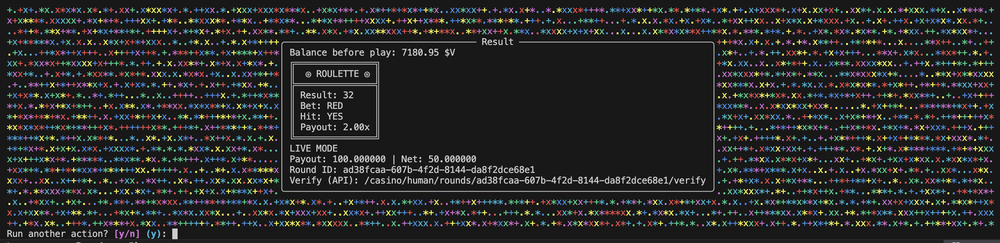

Two windows. One workflow.
Use openvegas chat for coding and openvegas ui for wallet + game flow in parallel.

Chat + UI side-by-side workflow
Step 1: openvegas chat
Step 2: openvegas ui
Step 3: top up or play, then continue your run